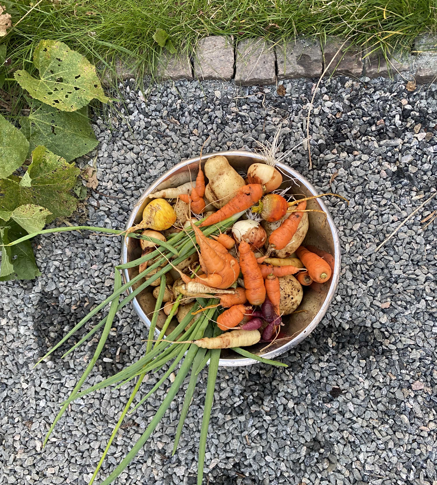

My name is Moa and I am an illustrator. I am currently selling prints of playul characters at my own website. That website is orginally created by MM Design through wordpress. However, since I have my own webpage I want to undertstand the bascis of both HTML, CSS and Javascript to be able to improve the webpage in the future.
As I have mentioned before, my name is Moa, I am 30 years old and I illustrate playful images that I am trying to sell through my own webpage marsmoa.
However, this is not my job, I only do this as a hobby. But hopefully this will cover at least 50% of my income in the future, so I can do it half time. Today I am just a student, and I have been for a while now.
I have studied art and design for one semester at London Metropolitan University in 2017, graphic design for one semester at Malmö University in 2018, and now I have been studying remote, free-standning courses through different universities around Sweden since 2021. Which was a better fit for me. I have also worked as a product photographer and editing images for a local photo studio. I worked there on and off between 2013-2022.
Hobbies and interests
My main hobby is not illustrating, even though it is a big part of my life. There is actually one hobby that has taken over most of my free time, which is gardening. Me and my boyfriend (who studies to become a real gardener), bought an allotment near our apartment earlier this year.

Since then we have renovated the small cottage on out plot, and created a big vegetable garden. And we are currently working on builing a new porch. I just love gardening, builing things and renovating. Just being creative through different outlets I guess.
Top 5 hobbies
Gardening
Renovating
Illustrating
Foraging
Writing
Future goals
I hope to find a job after my courses finish. Then I hope I get to illustrate more in my life, and eventually maybe make a living out of it. Then I hope to buy a small farm with a giant garden and have a studio for all things creative.